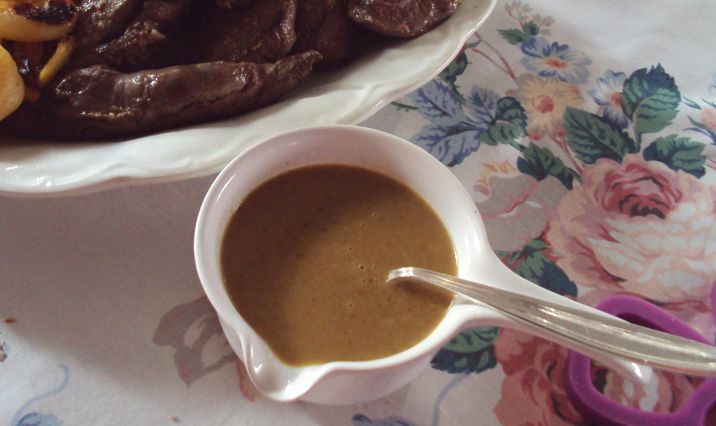

SALSA SAN HUBERTO
Ingredientes
- 1 trozo de piel de cerdo del tamaño de la palma de la mano
- 1 cebolla dulce, picada
- 2 escalonías, picadas
- 1 puerro, lo blanco, picado
- 2 zanahorias, picadas
- 2 tallos gruesos de perejil
- 75 ml de brandy u otro destilado, cognac, armagnac y 100 ml de vino blanco
- Fondo de caza o de cerdo oscuro, desgrasado
- 4-5 bolas de enebro
- 2-3 ramitas de tomillo
- varias vueltas de molinillo de pimienta negra
- 1-2 cucharadas de jalea de grosella
- Sal
- Nata, opcional
- Mantequilla

Esta es una de las salsas más clásicas de la cocina centroeuropea, donde San Huberto es el patrón de los cazadores. Sabrosa, con un ligero agridulce muy sutil, acompaña con elegancia las carnes de caza a la plancha en chuletas o filetes o al horno, en piezas, como lomos o solomillos. Es bastante oscura, por las verduras doradas, pero si se elige la opción de añadir nata al final, adquiere un tono más claro y un aspecto cremoso.


He cambiado la mantequilla o el aceite por piel de cerdo con un poco de tocino para el sofrito de las verduras, costumbre antigua española, porque las dora muy bien y la piel de cerdo no añade demasiada grasa pero sí sus sustancias gelatinosas a la salsa, que la hacen aún más suave y sedosa en la boca. Se puede utilizar, sin embargo y si se quiere, mantequilla o aceite.
Lavar o pelar todas las verduras antes de picarlas. En un cazo salsero grande o una cazuela, poner la piel de cerdo con la parte de tocino hacia abajo y acercar a fuego mediano. Moverla por el fondo, cuando se caliente, para que impregne de grasa el metal. Echar entonces cebolla, escalonía o chalota, puerro, zanahoria y tallos de perejil, bajar el fuego a suave. Mover de vez en cuando y esperar a que se vayan dorando, adquiriendo un color bonito y sin que se quemen. Mojar cuando se consiga con el brandy o el destilado que se use. Cuando casi se haya consumido, añadir el vino blanco. Al romper de nuevo el hervor, añadir al cazo como 3/4 de l de fondo de caza o cerdo oscuro y todas las especias, la pimienta molida y el tomillo.
A partir de este momento el hervor debe ser continuo y suave, Retirar con una cuchara de vez en vez las espumas e impurezas que suban a la superficie. Al cabo de 25 minutos de cocción, echar la jalea de grosellas, mezclar bien, dejar en hervor otros 10-15 minutos y probar de sal, corregir lo necesario, retirar la piel de cerdo y pasar la salsa por el chino sobre otro cazo limpio. Calentar y, si se quiere, añadir 2 o 3 cucharadas de nata y, siempre, 1 o 2 puntas de cuchara de mantequilla. Mover para montar la salsa y pasar a la salsera. Servir de inmediato.
Si la salsa ha de esperar, dejarla en el último cazo, cubierta con tapadera y, al momento de servir, calentar y terminarla con la nata, si se quiere, y la mantequilla.
Esta salsa, es obvio, acompaña muy bien carnes de caza, incluido el jabalí, pero también de cerdo o de buey. Es una salsa muy refinada que mejora muchas carnes. La cantidad obtenida con esta receta es de unos 300 ml, En esta página se encuentran dos recetas de chuletas de ciervo y chuletas de corzo.
NOTA: En la antigua cocina europea en las salsas y purés de verduras se utilizaba la raíz del perejil –como en el oriente se utiliza esta y la de cilantro con el mismo fin–, hoy muy difícil de encontrar. Por eso se recomienda en esta receta los tallos más gruesos del perejil, cercanos a su raíz y que dan mejor aroma que las hojas.